Hier sind die 120 neuesten von 1.954 Materialien. Alle im Material-Finder ansehen
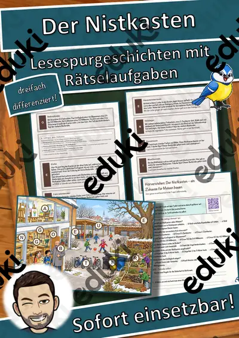
Der Nistkasten – ein Zuhause für Meisen bauen – Lesespurgeschichte mit Rätselaufgaben (Klasse 5)

Vom Feld in den Laden – der Weg des Apfels – Lesespurgeschichte mit Rätselaufgaben (Klasse 5)

Essen verbindet – Speiseregeln und Fasten in den Religionen – Lesespurgeschichte mit Rätselaufgaben (Klasse 5)
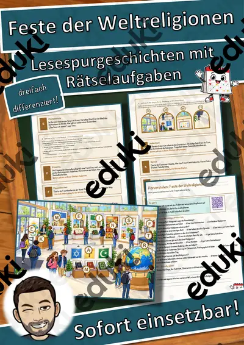
Feste der Weltreligionen – Lesespurgeschichte mit Rätselaufgaben (Klasse 5)

Die Wahl in der Klasse – Lesespurgeschichte mit Rätselaufgaben (Klasse 5)

Meerschweinchen – Hörverstehen mit Lückentext (interaktiv)

Meer – Hörverstehen mit Lückentext (interaktiv)

Matterhorn – Hörverstehen mit Lückentext (interaktiv)

Maschine – Hörverstehen mit Lückentext (interaktiv)
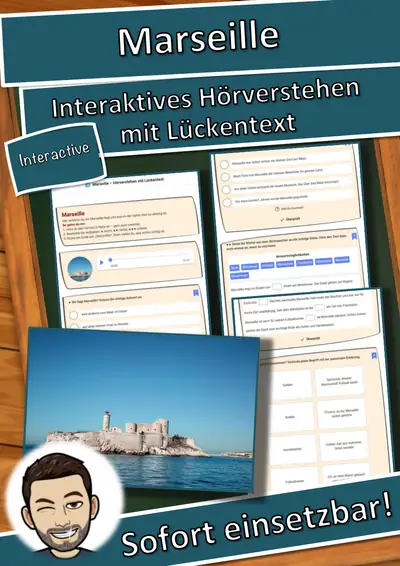
Marseille – Hörverstehen mit Lückentext (interaktiv)

Markgröningen – Hörverstehen mit Lückentext (interaktiv)

Marienkäfer – Hörverstehen mit Lückentext (interaktiv)
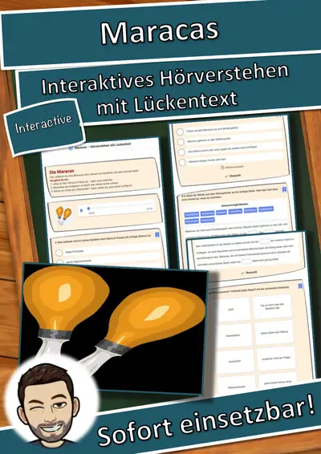
Maracas – Hörverstehen mit Lückentext (interaktiv)

Mandarine – Hörverstehen mit Lückentext (interaktiv)

Mammut – Hörverstehen mit Lückentext (interaktiv)

Magnet – Hörverstehen mit Lückentext (interaktiv)

Magen – Hörverstehen mit Lückentext (interaktiv)

Löwenzahn – Hörverstehen mit Lückentext (interaktiv)
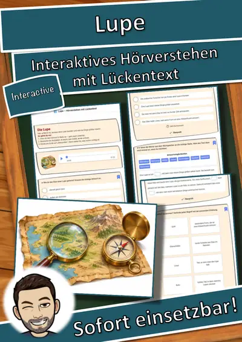
Lupe – Hörverstehen mit Lückentext (interaktiv)
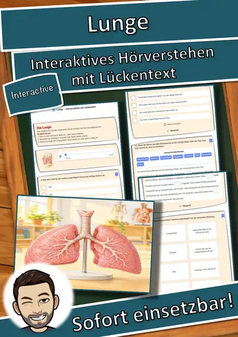
Lunge – Hörverstehen mit Lückentext (interaktiv)

London – Hörverstehen mit Lückentext (interaktiv)

London Eye – Hörverstehen mit Lückentext (interaktiv)

Lineal – Hörverstehen mit Lückentext (interaktiv)

Limonade – Hörverstehen mit Lückentext (interaktiv)

Liechtenstein – Hörverstehen mit Lückentext (interaktiv)

Licht – Hörverstehen mit Lückentext (interaktiv)
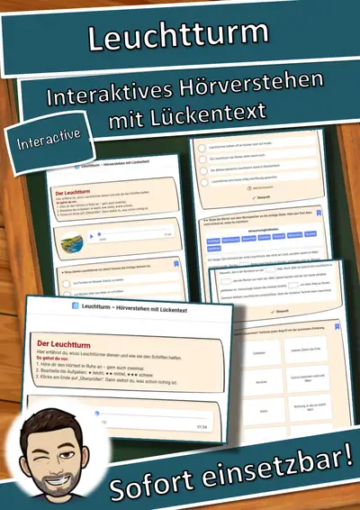
Leuchtturm – Hörverstehen mit Lückentext (interaktiv)

Lesen – Hörverstehen mit Lückentext (interaktiv)

Lernen – Hörverstehen mit Lückentext (interaktiv)
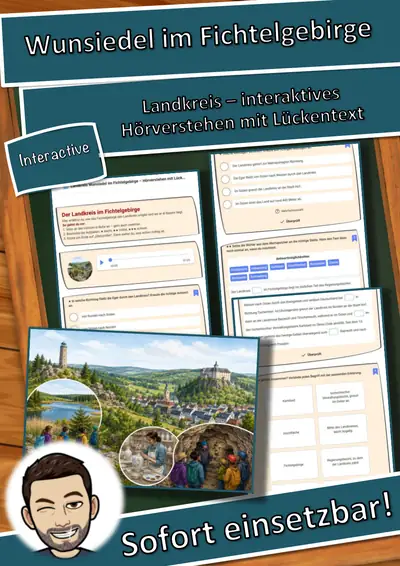
Landkreis Wunsiedel im Fichtelgebirge – Hörverstehen mit Lückentext (interaktiv)

Landkreis Neustadt an der Aisch-Bad Windsheim – Hörverstehen mit Lückentext (interaktiv)

Leopard – Hörverstehen mit Lückentext (interaktiv)
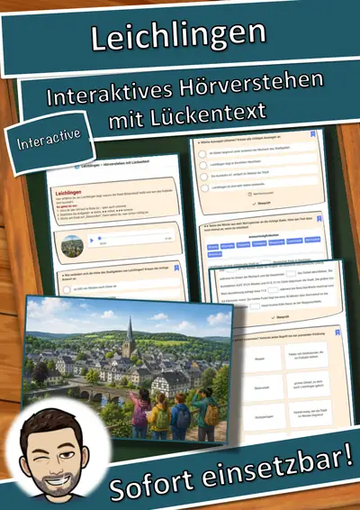
Leichlingen – Hörverstehen mit Lückentext (interaktiv)
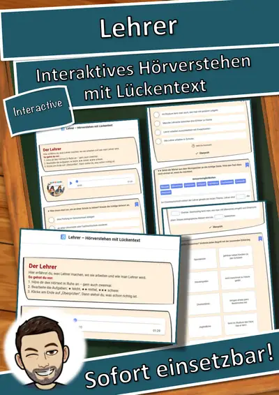
Lehrer – Hörverstehen mit Lückentext (interaktiv)

Lehm – Hörverstehen mit Lückentext (interaktiv)

Lebkuchen – Hörverstehen mit Lückentext (interaktiv)

Leben – Hörverstehen mit Lückentext (interaktiv)

Larve – Hörverstehen mit Lückentext (interaktiv)

Laubbaum – Hörverstehen mit Lückentext (interaktiv)

Lastwagen – Hörverstehen mit Lückentext (interaktiv)
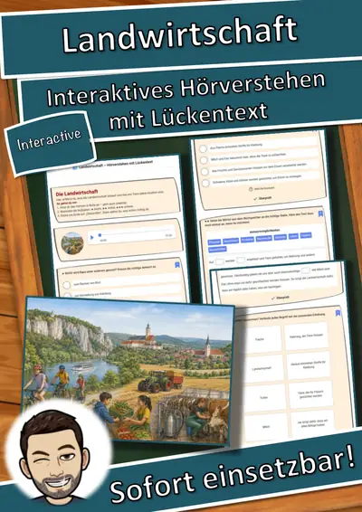
Landwirtschaft – Hörverstehen mit Lückentext (interaktiv)
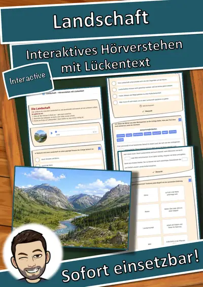
Landschaft – Hörverstehen mit Lückentext (interaktiv)
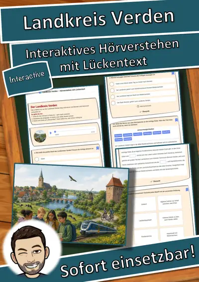
Landkreis Verden – Hörverstehen mit Lückentext (interaktiv)

Landkreis Tübingen – Hörverstehen mit Lückentext (interaktiv)

Landkreis Traunstein – Hörverstehen mit Lückentext (interaktiv)

Landkreis Straubing-Bogen – Hörverstehen mit Lückentext (interaktiv)
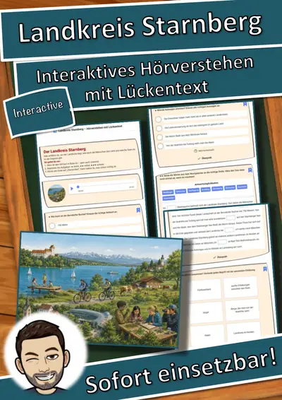
Landkreis Starnberg – Hörverstehen mit Lückentext (interaktiv)
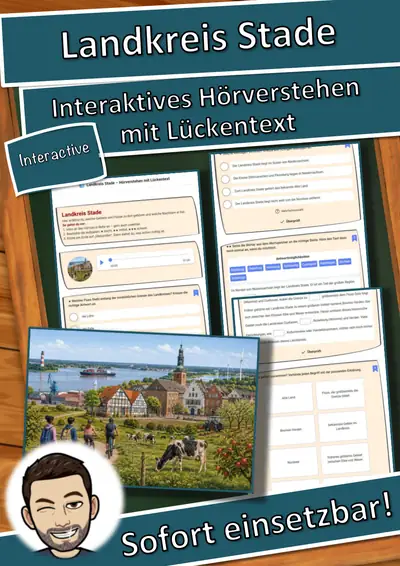
Landkreis Stade – Hörverstehen mit Lückentext (interaktiv)
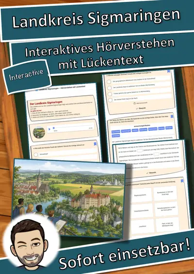
Landkreis Sigmaringen – Hörverstehen mit Lückentext (interaktiv)

Landkreis Schwäbisch Hall – Hörverstehen mit Lückentext (interaktiv)
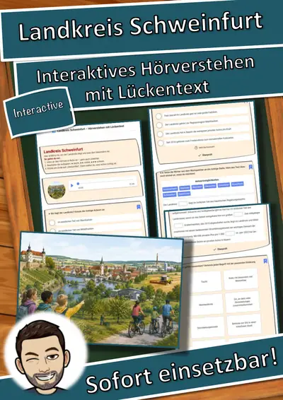
Landkreis Schweinfurt – Hörverstehen mit Lückentext (interaktiv)

Landkreis Schaumburg – Hörverstehen mit Lückentext (interaktiv)
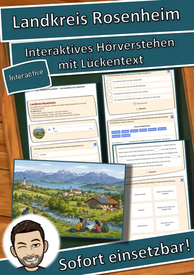
Landkreis Rosenheim – Hörverstehen mit Lückentext (interaktiv)

Landkreis Rhön-Grabfeld – Hörverstehen mit Lückentext (interaktiv)
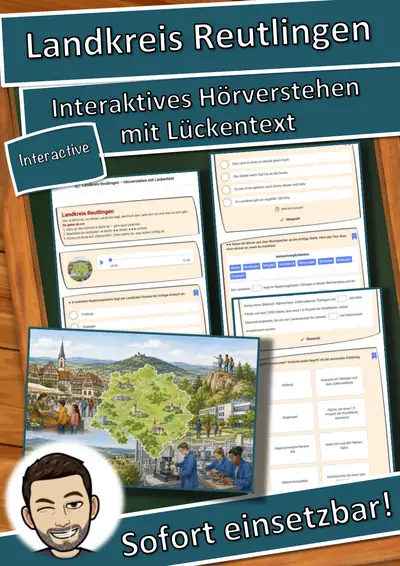
Landkreis Reutlingen – Hörverstehen mit Lückentext (interaktiv)
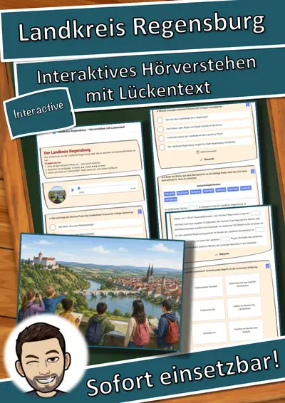
Landkreis Regensburg – Hörverstehen mit Lückentext (interaktiv)
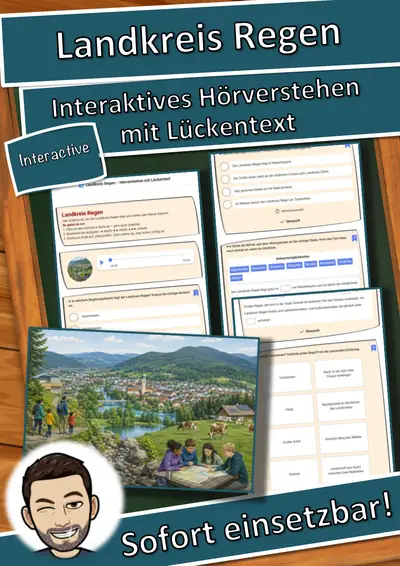
Landkreis Regen – Hörverstehen mit Lückentext (interaktiv)
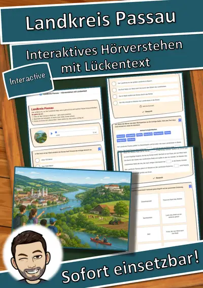
Landkreis Passau – Hörverstehen mit Lückentext (interaktiv)
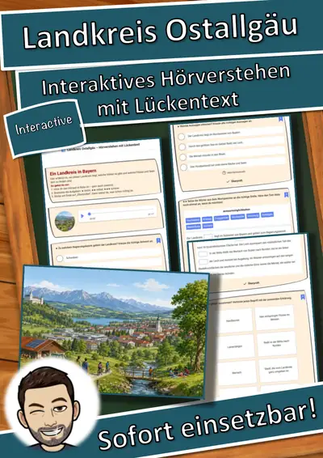
Landkreis Ostallgäu – Hörverstehen mit Lückentext (interaktiv)
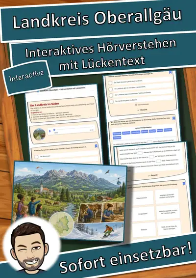
Landkreis Oberallgäu – Hörverstehen mit Lückentext (interaktiv)

Landkreis Northeim – Hörverstehen mit Lückentext (interaktiv)

Landkreis Neustadt an der Waldnaab – Hörverstehen mit Lückentext (interaktiv)
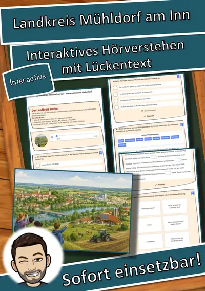
Landkreis Mühldorf am Inn – Hörverstehen mit Lückentext (interaktiv)

Landkreis Miesbach – Hörverstehen mit Lückentext (interaktiv)
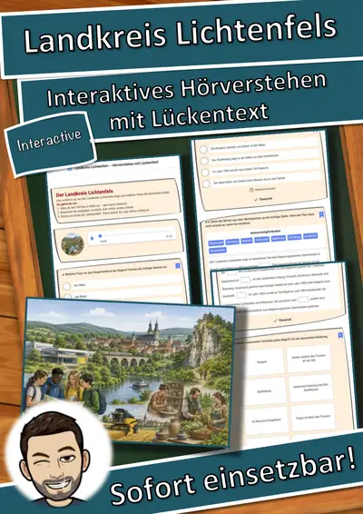
Landkreis Lichtenfels – Hörverstehen mit Lückentext (interaktiv)
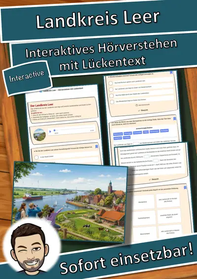
Landkreis Leer – Hörverstehen mit Lückentext (interaktiv)

Landkreis Landshut – Hörverstehen mit Lückentext (interaktiv)
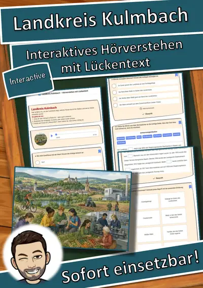
Landkreis Kulmbach – Hörverstehen mit Lückentext (interaktiv)

Landkreis Konstanz – Hörverstehen mit Lückentext (interaktiv)
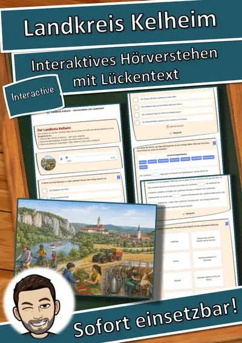
Landkreis Kelheim – Hörverstehen mit Lückentext (interaktiv)

Landkreis Kassel – Hörverstehen mit Lückentext (interaktiv)
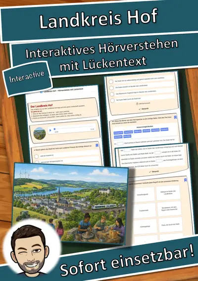
Landkreis Hof – Hörverstehen mit Lückentext (interaktiv)
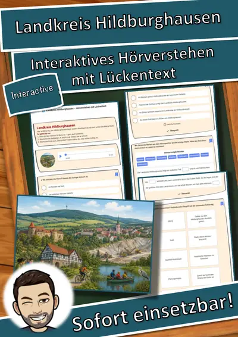
Landkreis Hildburghausen – Hörverstehen mit Lückentext (interaktiv)
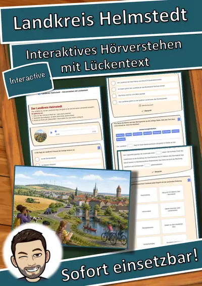
Landkreis Helmstedt – Hörverstehen mit Lückentext (interaktiv)
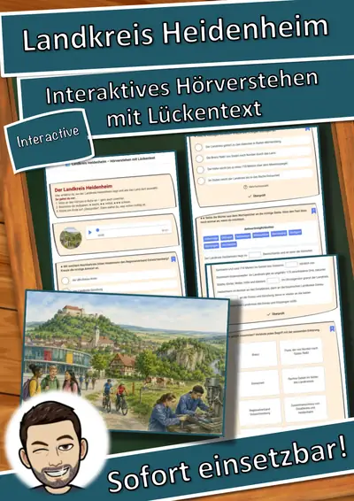
Landkreis Heidenheim – Hörverstehen mit Lückentext (interaktiv)
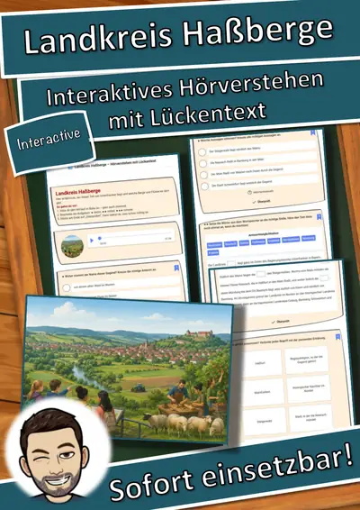
Landkreis Haßberge – Hörverstehen mit Lückentext (interaktiv)
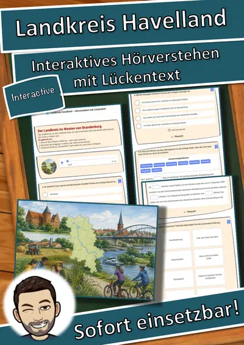
Landkreis Havelland – Hörverstehen mit Lückentext (interaktiv)
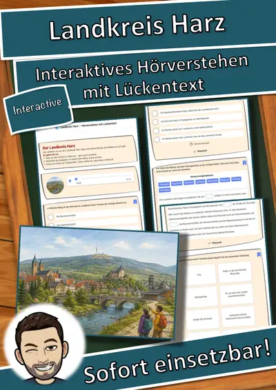
Landkreis Harz – Hörverstehen mit Lückentext (interaktiv)
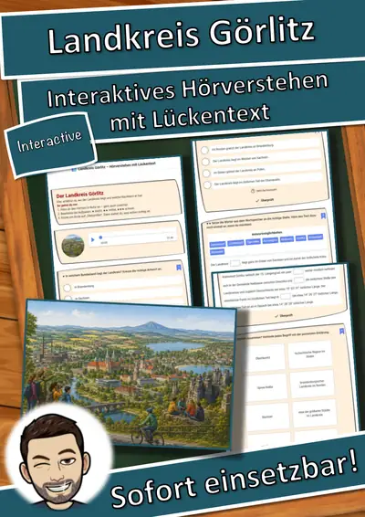
Landkreis Görlitz – Hörverstehen mit Lückentext (interaktiv)
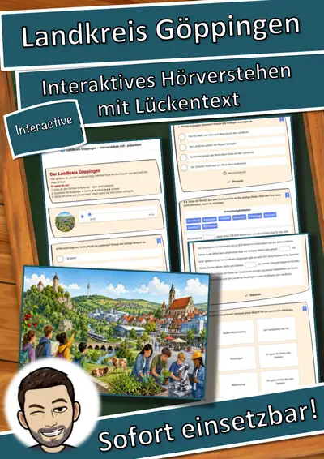
Landkreis Göppingen – Hörverstehen mit Lückentext (interaktiv)
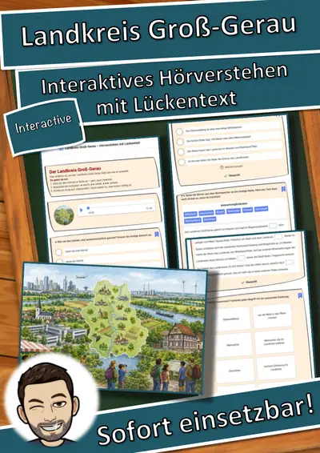
Landkreis Groß-Gerau – Hörverstehen mit Lückentext (interaktiv)
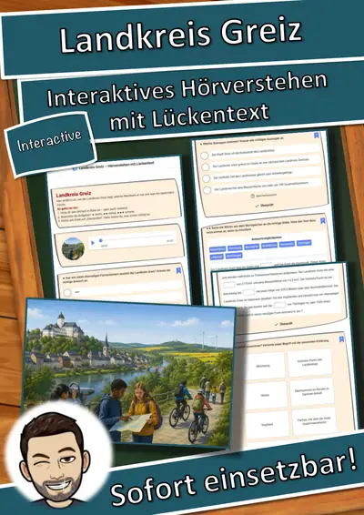
Landkreis Greiz – Hörverstehen mit Lückentext (interaktiv)

Landkreis Goslar – Hörverstehen mit Lückentext (interaktiv)
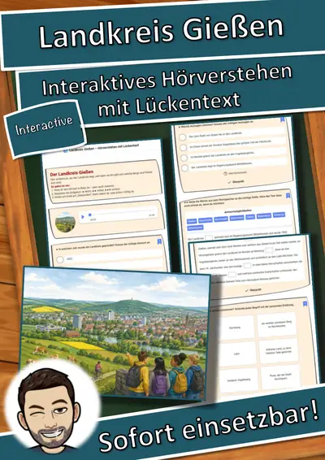
Landkreis Gießen – Hörverstehen mit Lückentext (interaktiv)
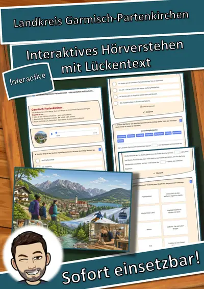
Landkreis Garmisch-Partenkirchen – Hörverstehen mit Lückentext (interaktiv)
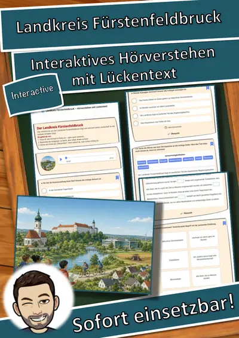
Landkreis Fürstenfeldbruck – Hörverstehen mit Lückentext (interaktiv)

Landkreis Fulda – Hörverstehen mit Lückentext (interaktiv)

Landkreis Freyung-Grafenau – Hörverstehen mit Lückentext (interaktiv)
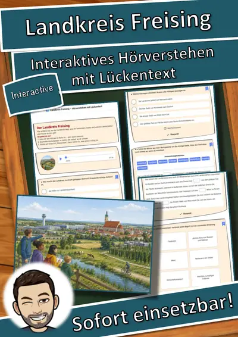
Landkreis Freising – Hörverstehen mit Lückentext (interaktiv)
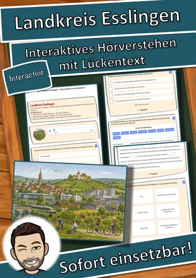
Landkreis Esslingen – Hörverstehen mit Lückentext (interaktiv)
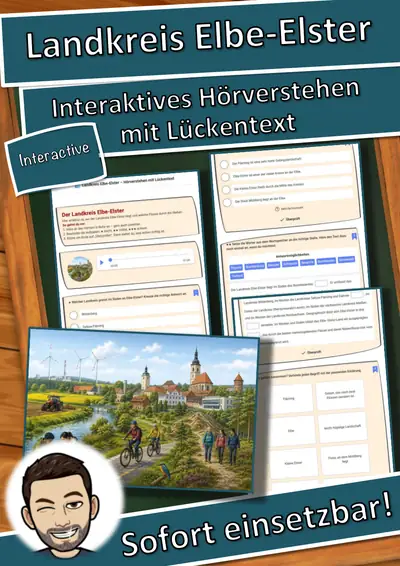
Landkreis Elbe-Elster – Hörverstehen mit Lückentext (interaktiv)
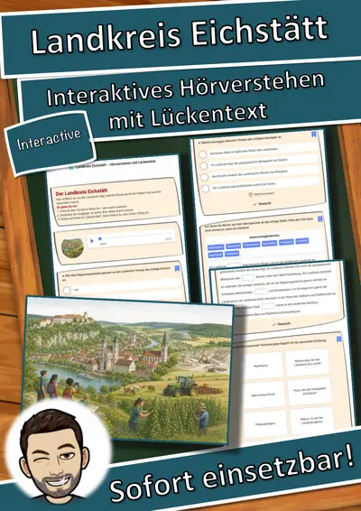
Landkreis Eichstätt – Hörverstehen mit Lückentext (interaktiv)
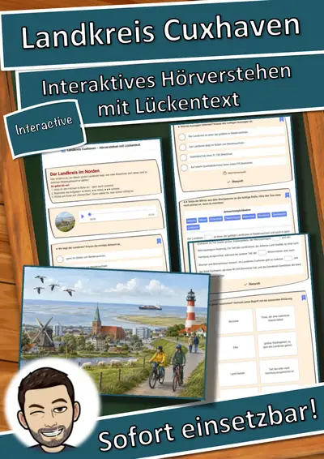
Landkreis Cuxhaven – Hörverstehen mit Lückentext (interaktiv)

Landkreis Coburg – Hörverstehen mit Lückentext (interaktiv)
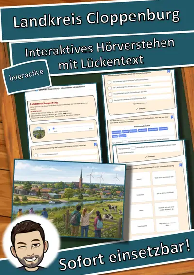
Landkreis Cloppenburg – Hörverstehen mit Lückentext (interaktiv)
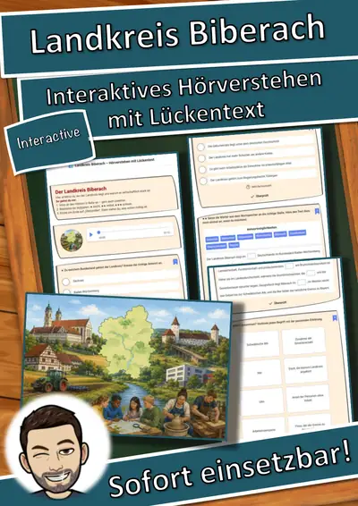
Landkreis Biberach – Hörverstehen mit Lückentext (interaktiv)
Landkreis Bergstraße – Hörverstehen mit Lückentext (interaktiv)

Landkreis Berchtesgadener Land – Hörverstehen mit Lückentext (interaktiv)
Landkreis Bad Kreuznach – Hörverstehen mit Lückentext (interaktiv)

Landkreis Bad Kissingen – Hörverstehen mit Lückentext (interaktiv)

Landkreis Aurich – Hörverstehen mit Lückentext (interaktiv)
Landkreis Anhalt-Bitterfeld – Hörverstehen mit Lückentext (interaktiv)

Landkreis Aichach-Friedberg – Hörverstehen mit Lückentext (interaktiv)

Landkreis Ahrweiler – Hörverstehen mit Lückentext (interaktiv)

Landkarte – Hörverstehen mit Lückentext (interaktiv)

Lama – Hörverstehen mit Lückentext (interaktiv)

Kupfer – Hörverstehen mit Lückentext (interaktiv)
Laden – Hörverstehen mit Lückentext (interaktiv)
Lachen – Hörverstehen mit Lückentext (interaktiv)
Labrador – Hörverstehen mit Lückentext (interaktiv)

Küste – Hörverstehen mit Lückentext (interaktiv)

Kürbisse – Hörverstehen mit Lückentext (interaktiv)

Kühlschrank – Hörverstehen mit Lückentext (interaktiv)

Küche – Hörverstehen mit Lückentext (interaktiv)

Köthen – Hörverstehen mit Lückentext (interaktiv)
König – Hörverstehen mit Lückentext (interaktiv)
Köcherfliege – Hörverstehen mit Lückentext (interaktiv)

Käse – Hörverstehen mit Lückentext (interaktiv)

Kuppel – Hörverstehen mit Lückentext (interaktiv)
Kunststoff – Hörverstehen mit Lückentext (interaktiv)
Keine Materialien gefunden – versuch einen anderen Suchbegriff oder Filter.